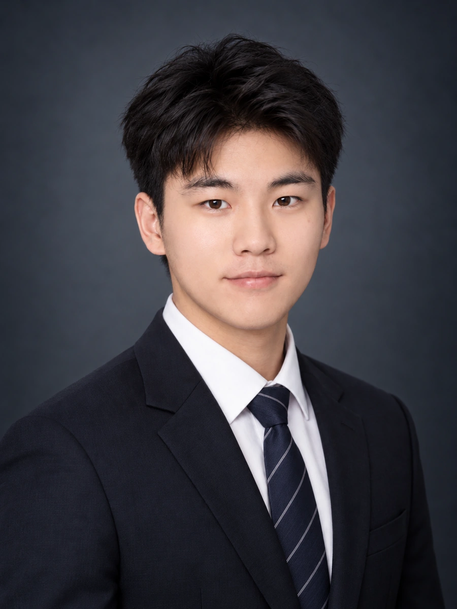

Modality-adaptive MRI segmentation.
Adaptive spatial–spectral conditioning and evidential regularization support 3D brain-lesion segmentation when MRI modalities are missing.
Medical imaging & machine learning
Learning from
incomplete information.
Master’s student at the University of Chinese Academy of Sciences.
Research at SIAT, Chinese Academy of Sciences.
Open to PhD opportunitiesShenzhen, China

I conduct research at the Paul C. Lauterbur Research Center for Biomedical Imaging, SIAT, CAS, advised by Prof. Haifeng Wang and Prof. Dong Liang.
I study how anatomical structure can guide segmentation, synthesis, and image–language analysis when medical images are incomplete or heterogeneous.
Across these settings, I am interested in anatomical priors, modality-aware representations, and explicit evidence: how much information is available, and how a model should use it.
Five projects in medical image analysis.
Adaptive spatial–spectral conditioning and evidential regularization support 3D brain-lesion segmentation when MRI modalities are missing.
Task-conditioned anatomical priors and flow matching synthesize missing MRI sequences from arbitrary available modality subsets with a short deterministic refinement path.
An anatomy-aware state-space network combines global organ-layout priors with attention-gated decoding for multi-organ abdominal MRI segmentation.
Calibrated geometric lifting aligns biplanar X-ray features in 3D, while residual latent diffusion refines a coarse chest CT reconstruction.
Source-relative anatomical retention provides an image-grounded signal for prioritizing generated chest-radiograph reports for review.
A visual research overview connecting the questions behind these projects.
Open research poster · PDF ↗
7 selected works
Under review · IEEE TMI
Adaptive spatial–spectral conditioning and evidential regularization support 3D brain-lesion segmentation when MRI modalities are missing.
Accepted · BIBM · Oral
Task-conditioned anatomical priors and flow matching synthesize missing MRI sequences from arbitrary available modality subsets with a short deterministic refinement path.
Accepted · EMBC 2026 · Oral
An anatomy-aware state-space network combines global organ-layout priors with attention-gated decoding for multi-organ abdominal MRI segmentation.
Under review
Calibrated geometric lifting aligns biplanar X-ray features in 3D, while residual latent diffusion refines a coarse chest CT reconstruction.
Under review · ESWA
Source-relative anatomical retention provides an image-grounded signal for prioritizing generated chest-radiograph reports for review.
Under review · AAAI · Equal contribution
* Equal contribution
Manuscript
Multi-organ segmentation guided by structured anatomical text.
No matching papers. Try another search or filter.
M.S. in Computer Technology
Beijing / Shenzhen, China
B.E. in Mechanical Engineering
Wuhan, China
Shenzhen Institutes of Advanced Technology
Chinese Academy of Sciences
Paul C. Lauterbur Research Center
for Biomedical Imaging
Advised by Prof. Haifeng Wang
and Prof. Dong Liang
PyTorch · Python · MATLAB · C++
3D medical imaging, flow matching, diffusion models, and multimodal learning.
For PhD opportunities and research conversations in medical image analysis, generative modeling, and multimodal learning.